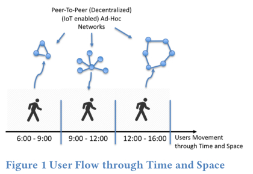
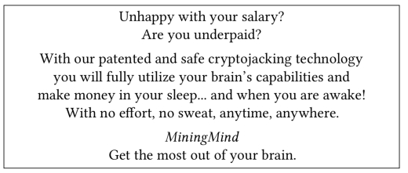

(译文)Re-coding Black Mirror -- part 5
原文地址：http://blog.acolyer.org/2018/05/18/re-coding-black-mirror-part-v
这是讨论Re-coding Black Mirror的论文的最后一部分，探讨了未来的技术场景及其对社会和伦理的影响，今天要阅读的两篇论文如下：
- 组建基于信任的去中心化的对等社交网络Towards trust-based decentralized ad-hoc social networks Koidl
- MMM:我能挖掘你的想法吗？MMM: May I mine your mind? Sempreboni and Viganò
(如果你没有ACM数字图书馆访问权限，上述的论文也可以从Morning Paper网站或者www 2018议程获取)
## 组建基于信任的去中心化的对等社交网络
Koidl认为，社交媒体上的“信任危机”会在过滤泡沫、假新闻和回音室现象中表现出来。 - 过滤气泡是基于内容的内容过滤的结果。基本原则是显示与用户先前参与的内容相关的用户内容。其结果是内容流缺乏主题和观点的多样性。
- 回音室效应是基于朋友和同龄人兴趣的内容推荐的结果。这导致内容提要强烈偏向于分组意见(例如，分组思考)。
对于大多数社交媒体平台的商业模式来说，我认为意识到内容的客观质量是无关紧要的，这一点很有帮助。高质量的内容只有在吸引和保留用户时才有用。平台并不是在卖内容，而是在卖你的注意力。这种业务的价值与它能控制的注意力分钟数有关。通过将人们分组，你可以通过向广告商出售他们最想吸引的人的注意力来进一步增加这些关注时间的价值。因此基本上:(a)一种方式让你花尽可能多的时间在这个平台上,因此所有的系统调优都是为了增加参与度并且增加回头率(b)了解尽可能多的关于你的信息,这样你的注意力可以更有效的打包出售(c)拍卖或以其他方式向有意的人推销你的注意力.
考虑到这台经济机器强大的激励机制，我们如何才能相信展示在我们面前的东西?
> 用户完全不知道是什么行为或参与导致了内容被显示在他们的内容流中。这种信任的移交是社交媒体应用的关键元素。
Koidl给出了HELIOS的例子，它旨在通过创建基于近距离的、对等的、以信任为基础的社交网络，将控制权和责任转移给个人用户。当用户在时间和空间中移动时，HELIOS不断地动态地学习人群和设备的网络组。这是一个把用户放在中心的分散的点对点模型。
建立起来的网络类型类似于Ego Network的概念，其中个人是社交网络的中心。这一概念符合这样一种理解，即每个人都自然地在其直接邻近范围内创建社交网络。

近距离的设计是为了模拟我们在现实世界中的互动，基于对周围物体和人的评估。邻近源进入上下文(本地网络)检测。"只有通过自动创建和自动配置网络，才有可能大规模采用和使用。"上下文是隐式的，是基于用户在该上下文中的行为而获得的。重复的交互作用加强了链接，如果不使用，它们会衰减，最终节点会被移除。

信任图的使用确保了每个社交网络遵循“基于信任”的原则。主要的方法是通过计算社交网络中每个新元素的信任值来建立。
举个例子，一辆用了很多次的车，是一辆我们可以给予更高程度信任的车。
MMM:我能挖掘你的想法吗？
这是研讨会的最后一篇论文，也是对未来情景的最极端的设想。这个想法的种子来自于cryptojacking(劫持别人的电脑进行挖矿)的兴起，在这个过程中，当用户访问他们的网站时，网站会使用嵌入的JavaScript来挖掘加密货币。加密可以秘密进行，但是您也可以想象这样的场景:明确的贡献自己的计算资源用于挖掘从而获得奖励.
一些关于脑-机交互的研究已经发表，一些初创公司正在开发接口，将人类的大脑直接连接到计算机……我们的大脑将被连接起来。我们的大脑将源源不断的接收数据并处理它。这就意味着我们的大脑将会有一个直接通向互联网的通道，所以为什么不想象这种连接是双向的呢?
现在考虑一下来自虚构公司MiningMind的以下广告:

这一阴谋的前提是，不久我们可能就有了一种技术，可以将奖励系统与使用人类大脑来挖掘密码的加密引擎合并在一起……或者进行其他一些挖掘活动。我们大脑的一部分将被用于密码计算，剩下的部分为了我们大脑的正常活动将不会被使用。
暂且不谈千千万万的实现和可行性问题，如果这是可能的，你认为社会中有哪个脆弱的群体会受到这个提议的诱惑呢?
Copyright © 2015 Powered by MWeb, Theme used GitHub CSS.